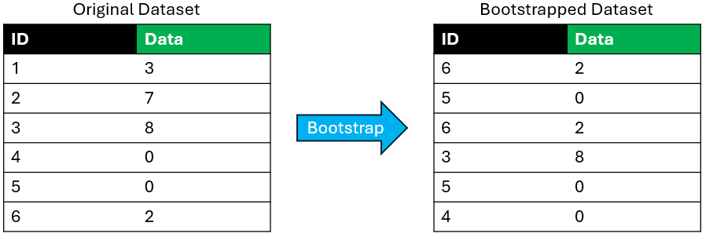
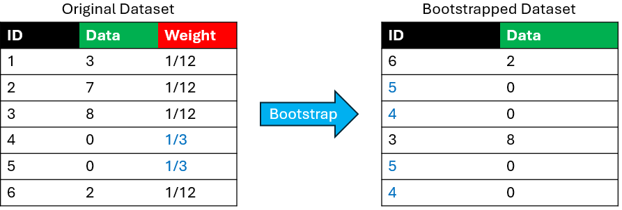
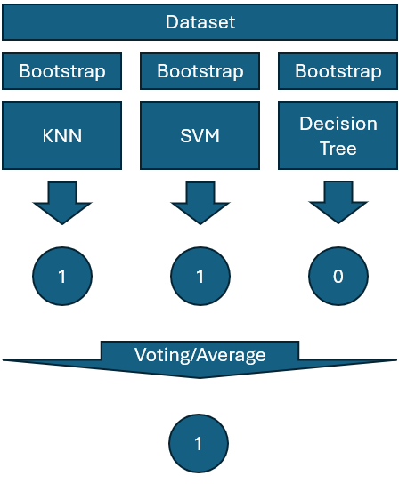
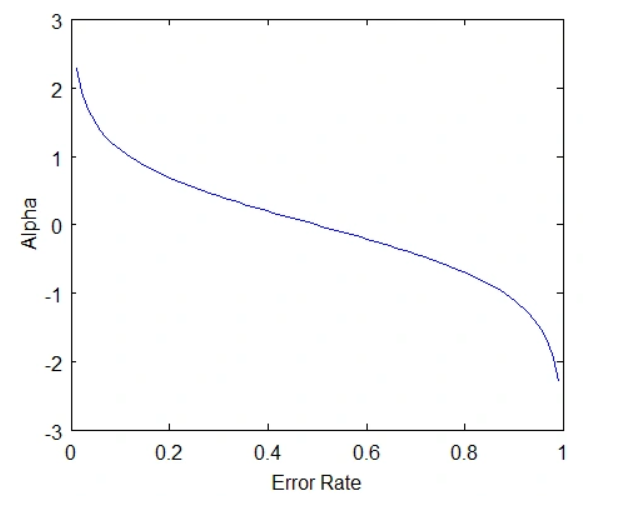
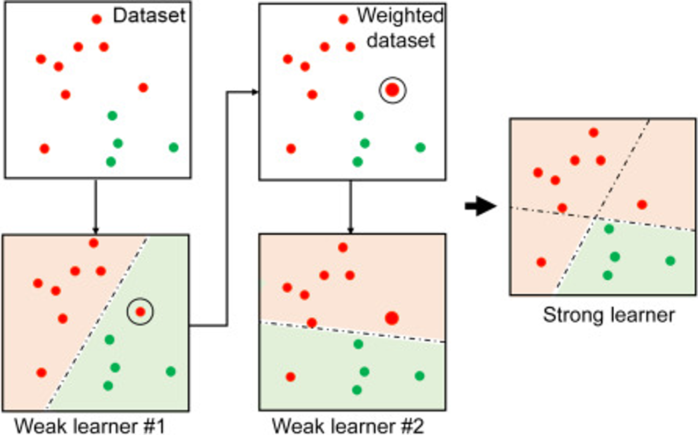
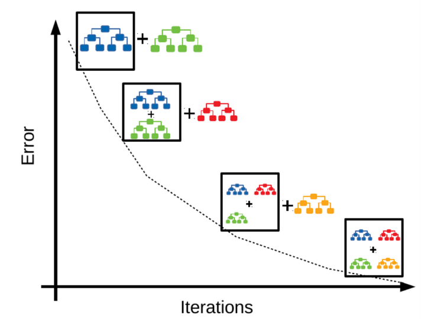
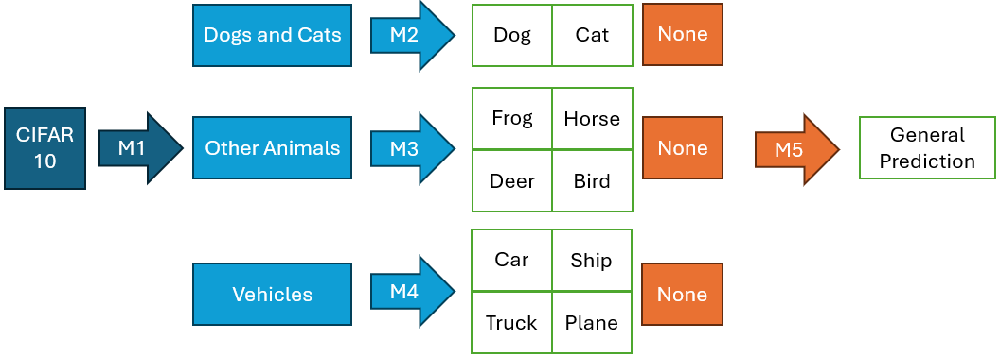
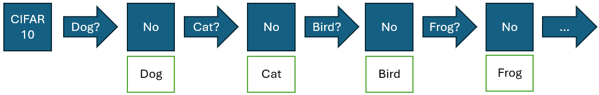
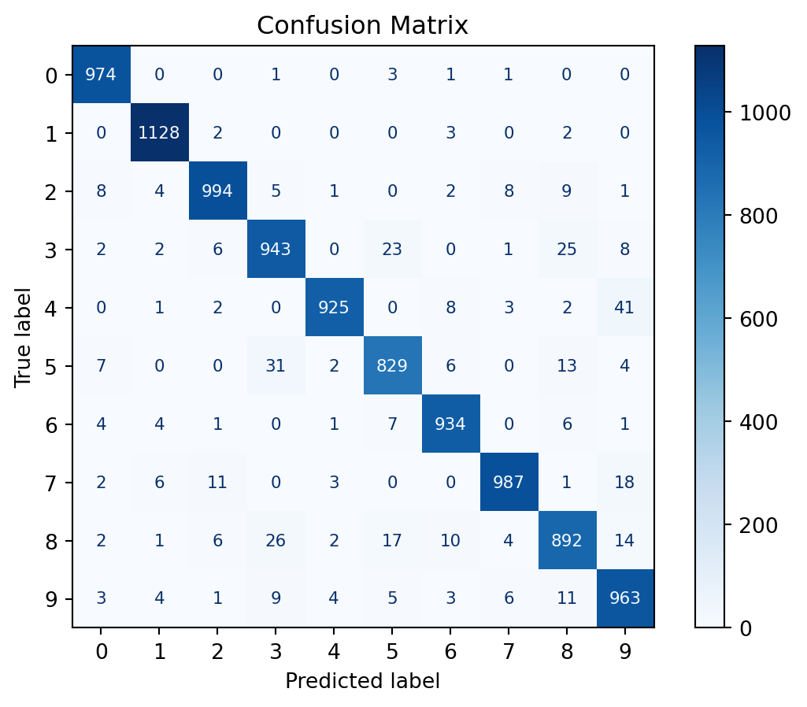
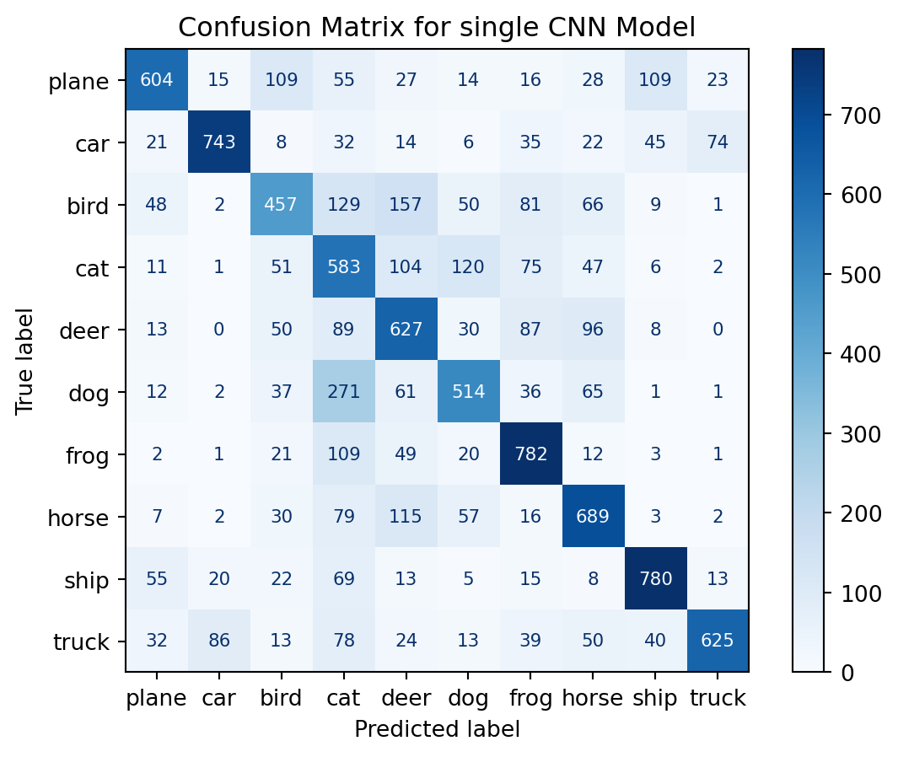

So far we’ve looked at a number of different machine learning algorithms. The one thing all these algorithms have in common is that they are all Strong learners. A strong learner is a model that is able to reach an arbitrary level of precision given enough resources and data. In contrast, a weak learner is a model that is just slightly better than random guessing. For example, a weak learner might be able to correctly classify 55% of the time, while a strong learner might be able to correctly classify 95% of the time. The basic idea behind ensemble methods is to combine multiple weak learners into a single strong learner.
This paradigm is akin to asking a crowd of people to guess the number of jelly beans in a jar, then taking the average as our final answer. The hope is that the average of the guesses will be more accurate than any single guess. I first saw this in a video, but was unable to find it again.
This section assumes the reader is familiar with decision trees as most ensemble methods are based on decision trees. If you are unfamiliar with decision trees, I recommend reading the Decision Trees section.
Bootstrap Resampling
Before we discuss any ensemble methods, we need to devise a way for us to train several independent models. One way to do this is to use bootstrap resampling. The idea behind bootstrap resampling is to take a random sample of the data with replacement, then train a model on that sample. We can repeat this process multiple times to get multiple models.
The following is a toy example of a single bootstrap resampling process:

Note each resample only keeps \(1-e^{-1}\approx 63.21%\) of the data. However, the power of bootstrap comes in the several resamples being done. With \(k\) resamples, we keep \(1-e^{-k}\times 100%\) of the data. Just \(k=5\) will keep \(99.33%\) of the data, so as long as we use enough models, this shouln’t be an issue. However, this does show that it is very risky to have several layers of bootstrapping, as we will be keeping an even smaller fraction of the data.
Weighted Bootstrap
In some cases, we may want to give more weight to some of the observations. For this, we can augment our data with weights proportional to the number of times each observation is included in the resample. This is called a weighted bootstrap.
The following is a toy example of a single weighted bootstrap resampling process. Observe how the observations with higher weights are more likely to be included in the resample.

Bagging
Bagging stands for Bootstap Aggregating. The key idea of bagging is to train several models in parallel using different bootstrap resamples of the data. Then, we combine the predictions of the models to make the final prediction. This could be averaging the predictions for regression problems, or majority voting for classification problems. It is possible to use different types of models for bagging, however, bagging models are typically homogeneous. The most popular bagging algorithm is random forests, which is when the base models are decision trees.
The following diagram shows a bagging process with 3 base models: KNN, SVM, and decision tree.

Voting
Voting is a variant of bagging, however, unlike bagging, the base models are all trained on the original dataset. It is not a good idea to use voting when bagging is available, but might be useful if the models are already trained. The following diagram shows a voting process with 3 base models: KNN, SVM, and decision tree.
Limitation
One distadvantage of bagging is that it is slower to train than a single model. Also, a bagging model can only be as good as the best base model. This are some limitations to consider when using bagging - the limits of the model become the limits of the bagging model.
Boosting
Boosting is a sequential ensemble method where each model is trained to correct the errors of the previous model. The first model is trained on the original data, and the second model is trained on the data where the errors of the first model are emphasized via weighted bootstrapping. This process continues until a stopping criterion is met. The final prediction is made by combining the predictions of all the models using a weighted sum. The weights are determined by the performance of each model on the training data.
AdaBoost
AdaBoost is a popular boosting algorithm that uses decision trees as base models. The algorithm works by training a series of decision trees on the training data, where each tree is trained to correct the errors of the previous tree. The final prediction is made by combining the predictions of all the trees using a weighted sum. The weights are determined by the performance of each tree on the training data. An overview of the AdaBoost algorithm is shown below:
Augment the dataset to have sample weights with initial weights set as \(\frac{1}{N}\).
Fit a weak learner, \(M_i\), using a weighted bootstrap.
Obtain the predictions on the original/full dataset.
Calculate \(E\), the weighted error: \[
E = 1 - \text{Weighted Accuracy}
\]
Compute the importance of the model: \[
\lambda_i = \frac{1}{2} \log \left( \frac{1 - E}{E} \right)
\]
Rescale the sample weights by:
\(e^{\lambda_i}\) if incorrectly classified
\(e^{-\lambda_i}\) if correctly classified
Normalize the weights such that the sum equals 1.
Repeat Steps 2-7 until a stopping condition is met.
In the end the ensemble prediction is given by: \[
M_\text{Final}(x) = \sum_{i=1}^N \lambda_i M_i(x)
\]
The following graph shows why importance has that formula - it gives high positive imporance to models that have a low error rate, a 0 importance to models that are 50/50, and a high negative importance to models that have a high error rate (take the opposite prediction). While this formula focuses only on the 2-class case, it is enough for us to understand the intuition behind it.

The following image shows how two weak learners are combined to form a strong learner:

Gradient Boosting
Gradient Boosting is a type of boosting algorithm that uses gradient descent to minimize the loss function. However, unlike gradient decent for neural networks, where the weights get updated to minimize the loss function, it adds a model to the ensemble in each iteration. The model is added to the ensemble in such a way that it minimizes the loss function. An overview of the Gradient Boosting algorithm is shown below:
Start by fitting a not-so-weak learner to the dataset, denoted as \(M_1\).
Compute a differentiable loss function, \(\mathcal{L}(y, M_i(x))\).
Repeat Steps 2-6 until a stopping condition is met.
The last model, \(M_T\), is the final model.
The following image illustrates the Gradient Boosting algorithm:

Gradient boosting is most useful when the base learner doens’t have a clear differentiable parameters such as decision trees.
XGBoost
XGBoost (eXtreme Gradient Boosting) is a variant of Gradient Boosting that uses a heuristic approaches to optimize the loss function and improve computational efficiency. It also introduces regularization terms to prevent overfitting. It is a controversial algorithm, so it will only be mentioned briefly here.
Stacking
Stacking is a technique that logically combines independently trained models to improve performance. It is a meta-algorithm that can be used with any combination of base models.
I had trouble trainig a good CNN that predicts the label of the CIFAR-10 dataset. My model got confused between cats and dogs a little bit too often. As such I propose a stacking model as shown below:

The key idea is to generate metaclasses that combine similar classes: - Cats and dogs - Other animals - Vehicles
Then I trained a models that predict the metaclasses, a model for each of the metaclasses that predicts the label or if the image is in the incorrect metaclass, and a final catch-all model that predicts the label if the image is in the incorrect metaclass.
Cascading
Cascading is a variant of stacking, where each model is applied sequentially to the data. Unlike the previous example, there’s no split paths. The following image shows how cascading can be used to tackle the classification of the CIFAR-10 dataset:

Now each model acts as a one vs all model. The first model predicts if the label should be “dog”, the second model predicts if the label should be “cat”, and so on. As such it is important to train a model with recall and specificity in mind.
Not PyTorch
Here I’ll show the results of the ensemble models I trained with data I used through the semester. The dataset for Bagging is a 10-dimensional latent space of the MNIST dataset, obtained through a variational autoencoder. The dataset for Stacking is the base CIFAR-10 dataset.
Bagging
To classify my latent space of the MNIST dataset, I used 5 instances of several classification models I’ve learned throughout my career + the ensemble tree models:
Previous models:
Logistic Regression
K-Nearest Neighbors
Support Vector Machine
Naive Bayes
MLP Classifier
Ensemble models:
Random Forest
AdaBoost
Gradient Boosting
Fortunately, Scikit-Learn implements all of these models, and a Voting ensembler. With prior bootstrapping of the data, I could aggregate all models into a single Bagging model. Note that I used some very wishiy-washy parameter tuning for the models, but I wanted to keep the code as simple as possible. Also, I wouldnt use a bagging model with any of the ensemble models, as the parameter tuning for these can be very time-consuming and it adds a second layer of bootstrapping.
I had to use some questionable code to aggregate the models into the VotingClassifier class. The ScikitLearnWrapper class is a wrapper that handles the bootstrapping, training, parameter tuning, and saving/loading of the models. It can be found in the SckitLearnWrapper.py file in the github repository.
# dummy models used to train the voting classifierdummy_models = [ ('dummy1', KNeighborsClassifier()), ('dummy2', KNeighborsClassifier())]# train real models that will be hijacked into the voting classifier# formatted in the shape the voting classifier expects# list[(name: str, model)]models = [ (f'{model}_{i}', SckitLearnWrapper(model, i, X_train, y_train).train('models/'))for model in get_all_model_names()for i inrange(5)]# train with dummy modelsbagger = VotingClassifier(estimators=dummy_models, voting='soft')bagger.fit(X_train, y_train)# assign pre-trained modelsbagger.estimators = models
Now that the Bagger is trained, we can use it to predict the labels of the test. Let’s take a look at the confusion matrix and the accuracy score of the Bagger model:
Confusion Matrix and accuracy score
y_pred = bagger.predict(X_test)cm = confusion_matrix(y_test, y_pred)disp = ConfusionMatrixDisplay(confusion_matrix=cm)disp.plot(cmap=plt.cm.Blues, text_kw={'fontsize': 8, 'ha': 'center', 'va': 'center'})# Format numbers as integers without scientific notationfor text in disp.text_.ravel(): text.set_text(f'{int(float(text.get_text()))}')plt.title('Confusion Matrix')plt.show()# compute accuracyaccuracy = accuracy_score(y_test, y_pred)print(f"Accuracy: {accuracy}")

Accuracy: 0.9569
As we can observe, the Bagger model did pretty well. Let’s take a look at how each of the models performed individually:
Accuracy of each model
# get a list with all the modelsall_models = [*models, ('Bagger_0', bagger)]# make that list into a dataframe with the model name, model type, model index, and accuracyaccuracies = pd.DataFrame({'name': name,'model_type': name.split('_')[0],'model_index': name.split('_')[1],'accuracy': accuracy_score(y_test, model.predict(X_test)),} for name, model in all_models)# Show the accuracies from highest to lowestaccuracies.sort_values('accuracy', ascending=False)
name
model_type
model_index
accuracy
16
RBF_1
RBF
1
0.9582
43
MLPClassifier_3
MLPClassifier
3
0.9571
45
Bagger_0
Bagger
0
0.9569
15
RBF_0
RBF
0
0.9565
18
RBF_3
RBF
3
0.9563
17
RBF_2
RBF
2
0.9561
19
RBF_4
RBF
4
0.9557
40
MLPClassifier_0
MLPClassifier
0
0.9555
41
MLPClassifier_1
MLPClassifier
1
0.9553
42
MLPClassifier_2
MLPClassifier
2
0.9545
44
MLPClassifier_4
MLPClassifier
4
0.9537
25
KNeighborsClassifier_0
KNeighborsClassifier
0
0.9533
27
KNeighborsClassifier_2
KNeighborsClassifier
2
0.9527
28
KNeighborsClassifier_3
KNeighborsClassifier
3
0.9510
26
KNeighborsClassifier_1
KNeighborsClassifier
1
0.9509
29
KNeighborsClassifier_4
KNeighborsClassifier
4
0.9503
9
RandomForestClassifier_4
RandomForestClassifier
4
0.9353
5
RandomForestClassifier_0
RandomForestClassifier
0
0.9349
8
RandomForestClassifier_3
RandomForestClassifier
3
0.9347
6
RandomForestClassifier_1
RandomForestClassifier
1
0.9340
7
RandomForestClassifier_2
RandomForestClassifier
2
0.9339
13
SVM_3
SVM
3
0.9335
11
SVM_1
SVM
1
0.9332
14
SVM_4
SVM
4
0.9331
10
SVM_0
SVM
0
0.9320
12
SVM_2
SVM
2
0.9320
31
GradientBoostingClassifier_1
GradientBoostingClassifier
1
0.9122
32
GradientBoostingClassifier_2
GradientBoostingClassifier
2
0.9098
33
GradientBoostingClassifier_3
GradientBoostingClassifier
3
0.9089
30
GradientBoostingClassifier_0
GradientBoostingClassifier
0
0.9077
34
GradientBoostingClassifier_4
GradientBoostingClassifier
4
0.9068
23
LogisticRegression_3
LogisticRegression
3
0.9055
22
LogisticRegression_2
LogisticRegression
2
0.9053
20
LogisticRegression_0
LogisticRegression
0
0.9039
21
LogisticRegression_1
LogisticRegression
1
0.9037
24
LogisticRegression_4
LogisticRegression
4
0.9031
3
GaussianNB_3
GaussianNB
3
0.8867
0
GaussianNB_0
GaussianNB
0
0.8863
2
GaussianNB_2
GaussianNB
2
0.8861
4
GaussianNB_4
GaussianNB
4
0.8859
1
GaussianNB_1
GaussianNB
1
0.8857
37
AdaBoostClassifier_2
AdaBoostClassifier
2
0.7522
36
AdaBoostClassifier_1
AdaBoostClassifier
1
0.7351
38
AdaBoostClassifier_3
AdaBoostClassifier
3
0.7329
35
AdaBoostClassifier_0
AdaBoostClassifier
0
0.7286
39
AdaBoostClassifier_4
AdaBoostClassifier
4
0.7196
While it wasn’t the best, the Bagger model managed to get the third highest accuracy without any insight about model performance! Let’s also take a look at the average accuracy of each model type:
Average accuracy of each model type
# group the accuracies by model type and compute the meanpd.DataFrame( accuracies.groupby('model_type') \ .accuracy.mean()\ .sort_values(ascending=False) \ .reset_index() \ .rename(columns={'index': 'model_type'}))
model_type
accuracy
0
Bagger
0.95690
1
RBF
0.95656
2
MLPClassifier
0.95522
3
KNeighborsClassifier
0.95164
4
RandomForestClassifier
0.93456
5
SVM
0.93276
6
GradientBoostingClassifier
0.90908
7
LogisticRegression
0.90430
8
GaussianNB
0.88614
9
AdaBoostClassifier
0.73368
Now, the Bagger model is the clear winner! Hopefully this shows that bagging is a very powerful technique for improving the performance of a model.
Stacking
To classify the images of the CIFAR-10 dataset, I used the described architecture in the stacking segment of this section.
This metaclass approach requires a significant amount of boilerplate code to train the models. However, for brevity sake, I’ll just load the pre-trained models and use them for prediction. The omitted code can be found in the Stacking.ipynb file in the repository.
Load pre-trained models
# model 1: meta class predictormeta_model = CIFAR10Classifier(3)meta_model.load_state_dict(torch.load('models2/model_meta.pth', weights_only=False))# model 2: vehicle predictorsubmodel_1 = CIFAR10Classifier(5)submodel_1.load_state_dict(torch.load('models2/model_meta_class_0.pth', weights_only=False))# model 3: general animal predictorsubmodel_2= CIFAR10Classifier(5)submodel_2.load_state_dict(torch.load('models2/model_meta_class_1.pth', weights_only=False))# model 3: cat-dog predictorsubmodel_3= CIFAR10Classifier(3)submodel_3.load_state_dict(torch.load('models2/model_meta_class_2.pth', weights_only=False))# model 5: catch-all predictorcatchall_model = CIFAR10Classifier(10)catchall_model.load_state_dict(torch.load('models2/model_general.pth', weights_only=False))
<All keys matched successfully>
Then, we can use the following function to predict the class of an image using the ensemble of models. The arguments of the functions go as follows:
meta_model: the meta-classifier model
sub_models: a list containitng the sub-classifier models
general_model: the general catch all classifier model
input_images: the input images
sub_prediction_maps: mapping between sub-classifier labels and general class labels packed into a list of dictionaries: one for each of the submodels.
def stacked_predictions(meta_model, sub_models, general_model, input_images, sub_prediction_maps):# validate inputassertlen(sub_models) ==len(sub_prediction_maps)# eval mode meta_model.eval() general_model.eval()for submodel in sub_models: submodel.eval()# predictionswith torch.no_grad():# predict metaclass meta_features = meta_model(input_images).argmax(dim=1) predictions = torch.zeros_like(meta_features)# predict subclassesfor k, submodel inenumerate(sub_models):# predict the classes for the observations predicted to belong to this metaclass mask = meta_features == k sub_prediction = submodel(input_images[mask]).argmax(dim=1)# map the predictions to the general class labels# use -1 to indicate that the metaclass prediction was predicted to be incorrect prediction_map = sub_prediction_maps[k] temp = [prediction_map.get(pred.item(), -1) for pred in sub_prediction] predictions[mask] = torch.tensor(temp)# correct incorrect metaclass predictions# report the amount of incorrect predictions incorrect_mask = predictions ==-1print(f"Incorrect predictions: {incorrect_mask.sum().item()}") predictions[incorrect_mask] = general_model(input_images[incorrect_mask]).argmax(dim=1)# return final predictions return predictions
Now, we can compare the performance of the ensemble model vs the general model:
# predicty_pred = catchall_model(X_test).argmax(dim=1).detach()# display confusion matrixcm = confusion_matrix(y_test, y_pred)classes = ('plane', 'car', 'bird', 'cat', 'deer', 'dog', 'frog', 'horse', 'ship', 'truck')disp = ConfusionMatrixDisplay(confusion_matrix=cm, display_labels=classes)disp.plot(cmap=plt.cm.Blues, text_kw={'fontsize': 8, 'ha': 'center', 'va': 'center'})# Format numbers as integers without scientific notationfor text in disp.text_.ravel(): text.set_text(f'{int(float(text.get_text()))}')plt.title('Confusion Matrix for single CNN Model')plt.show()# compute accuracyaccuracy = accuracy_score(y_test, y_pred)print(f"Accuracy: {accuracy}")

Accuracy: 0.6404
As we can observer, the stacked model slightly outperforms the single CNN model. However, this is not always the case, it varied depending on the number of epochs. This is a nitpicked example to show that Stacking models can outperform single models.
Ensemble models is a different paradigm form the ones we have seen so far. It is a way to combine multiple models to create a single model that is more robust and accurate than any of the individual models.